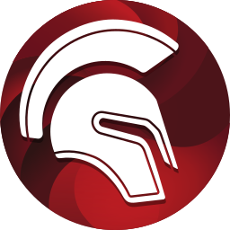
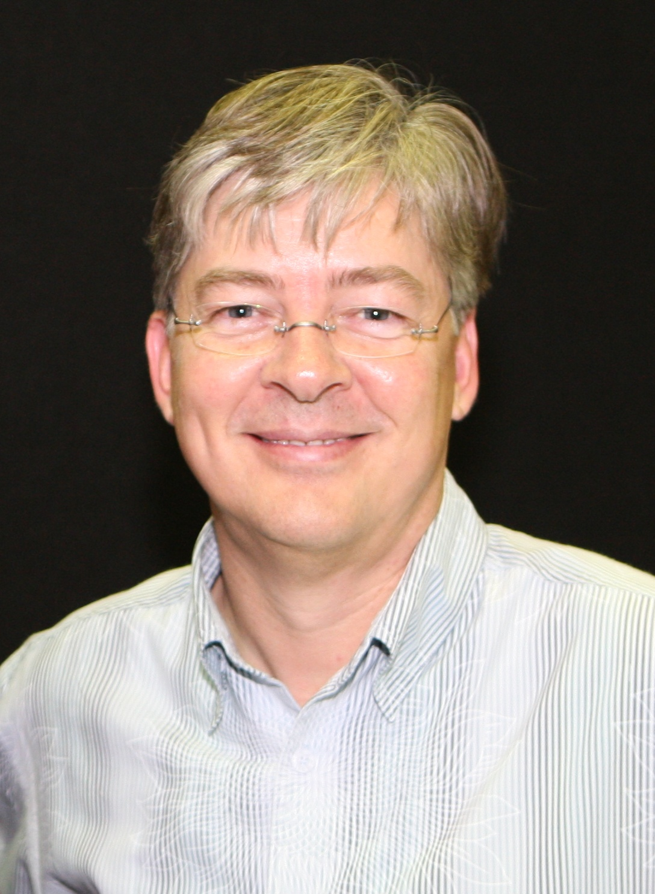
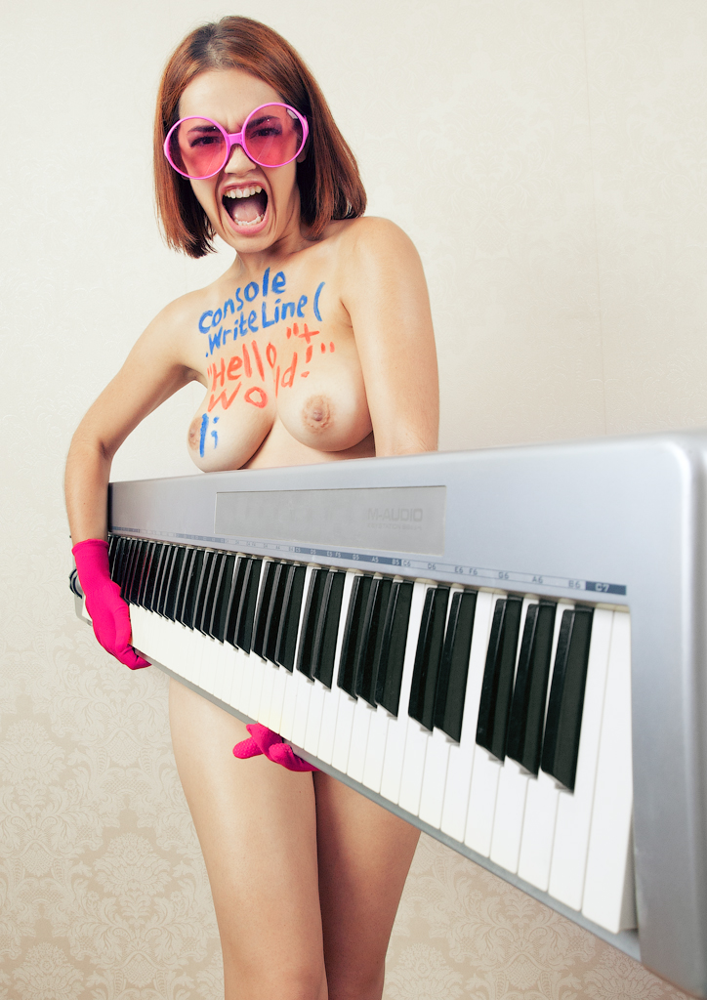
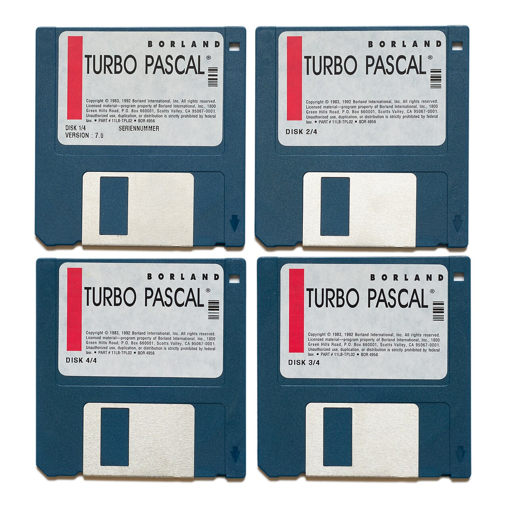
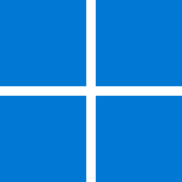

Historia de la Computación
¿SABÍAS ESTO?
1 ARQUITECTO
C#
TypeScript

Turbo Pascal
El Genio Danés


Anders Hejlsberg
Technical Fellow
Copenhague, 1960 · Arquitecto en Borland y Microsoft
Borland · Innovación 1983
TURBO PASCAL
TURBO.PAS — Compilador en RAM
100x MÁS RÁPIDO

Disquetes 5¼" Originales de 1983
Todo el compilador + editor cabían en menos de 40 KB de RAM
1983
Revolución en la Educación y Rendimiento
Microsoft · Estándar Global
NACE C# & .NET
Program.cs — Visual Studio & CLR
ENTERPRISE READY

2000
El Pilar del Software Empresarial
La Era de la Web Moderna
TYPESCRIPT
index.ts — Tipado Estricto & Autocompletado
TYPE SAFETY
➔
2012
Escalabilidad y Seguridad para la Web
Su Filosofía
“Crear herramientas elegantes que empoderen a los desarrolladores.”
— Anders Hejlsberg
🚀 4 DÉCADAS TRANSFORMANDO EL SOFTWARE MUNDIAL
00:00 / 00:53